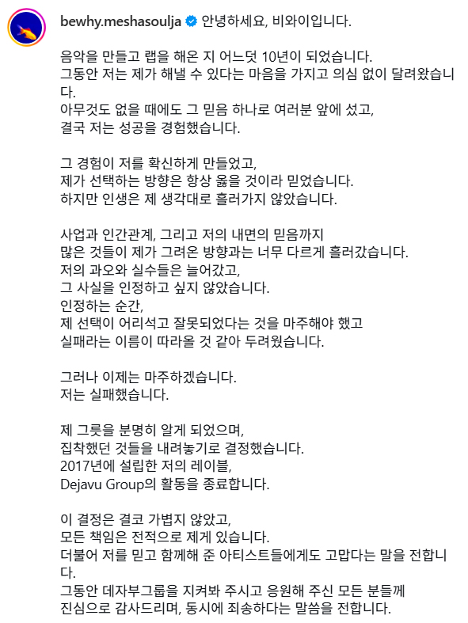
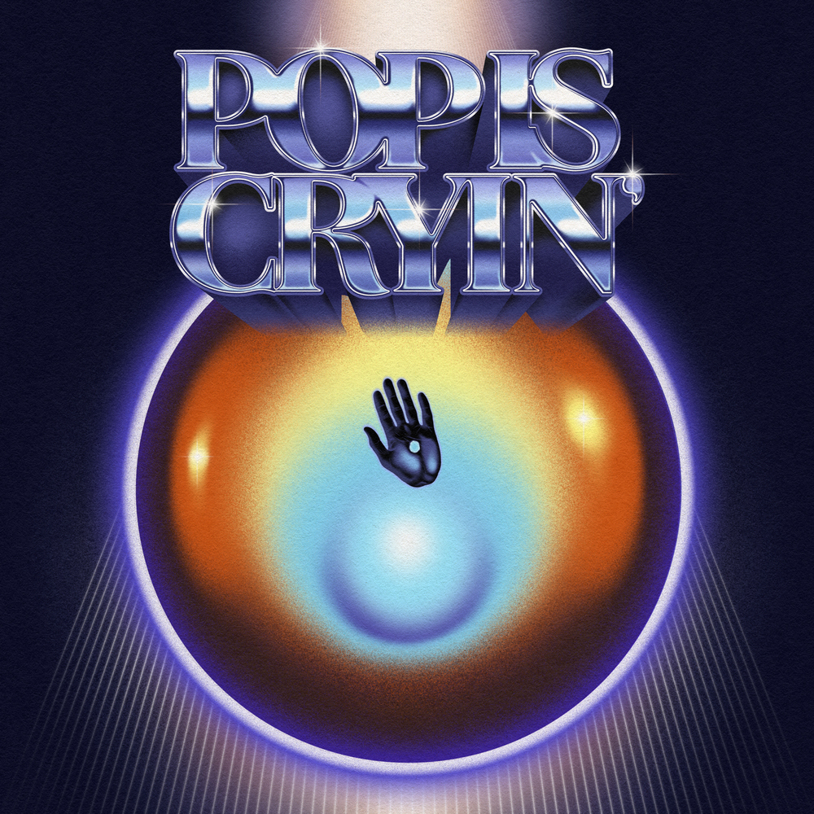
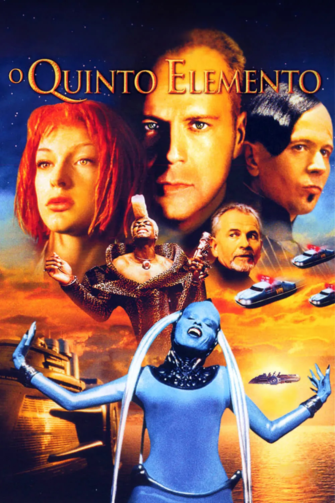
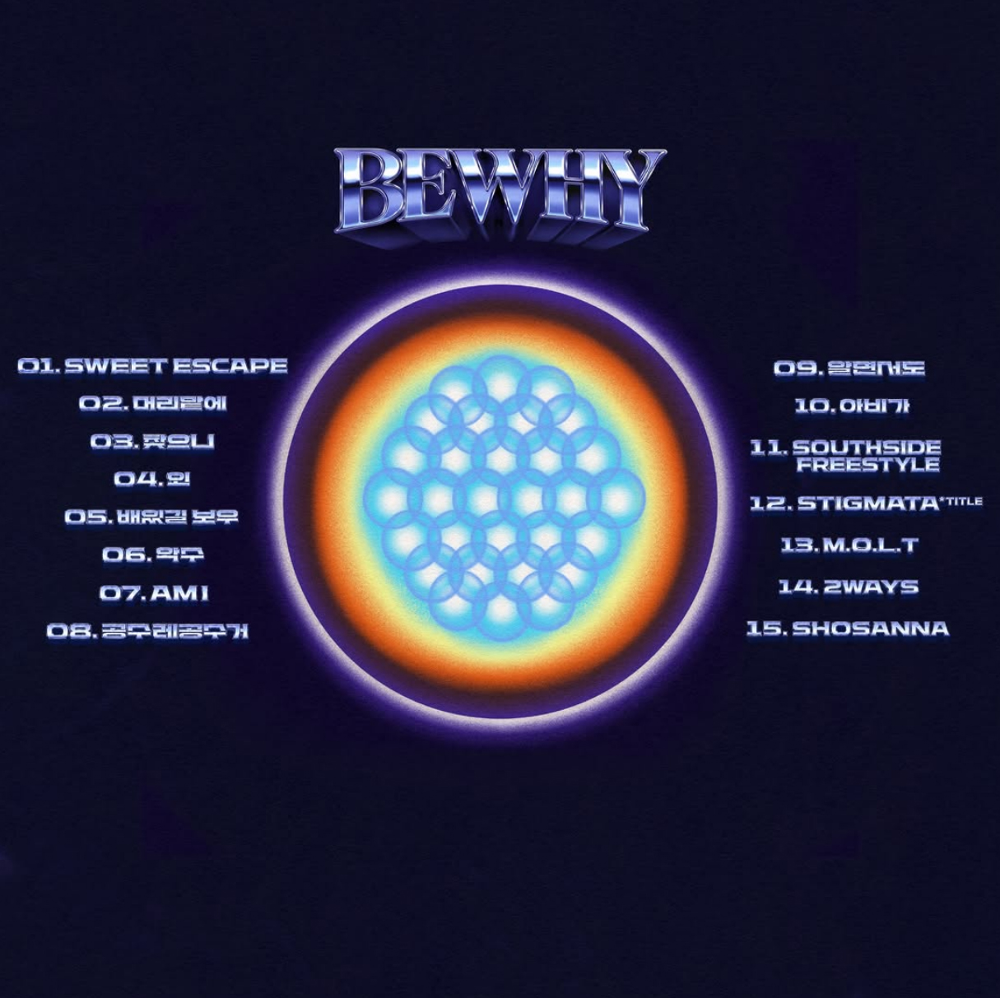
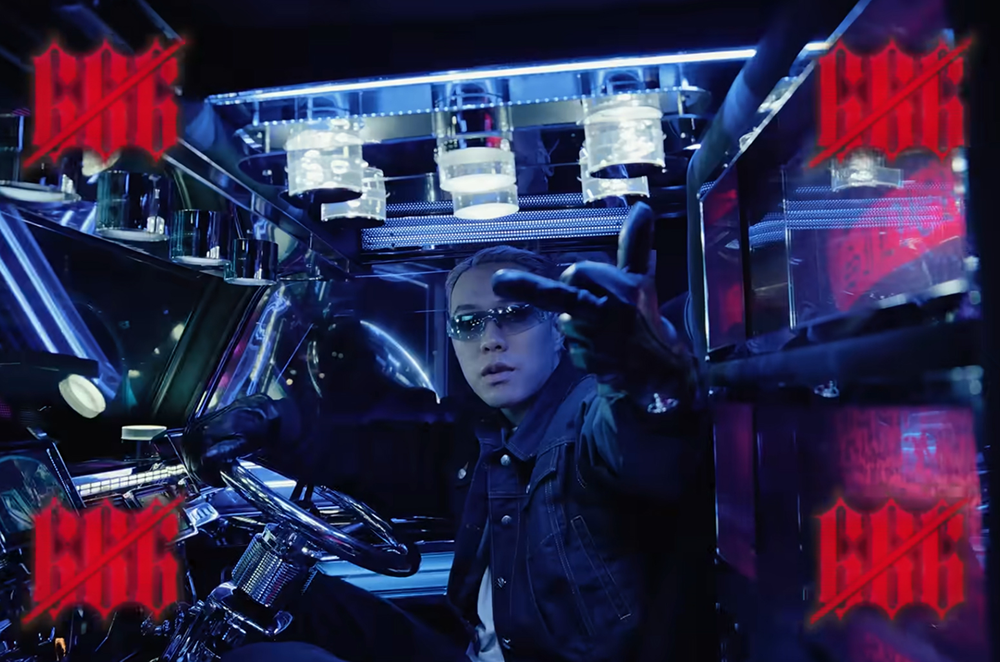
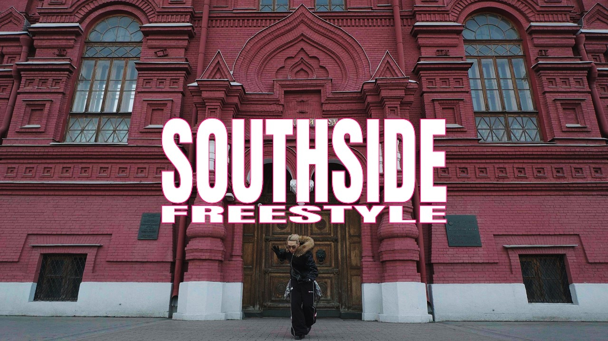
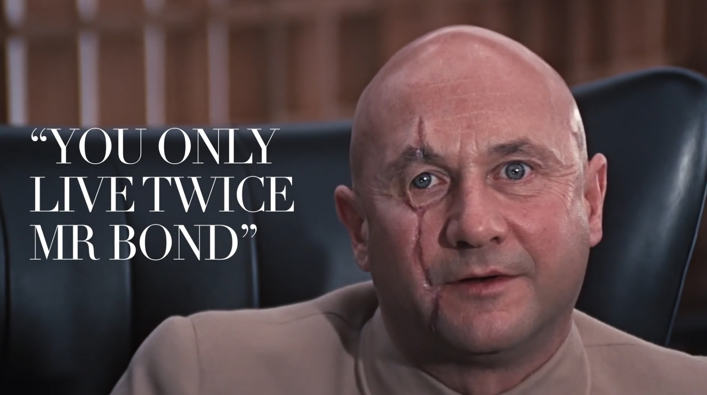
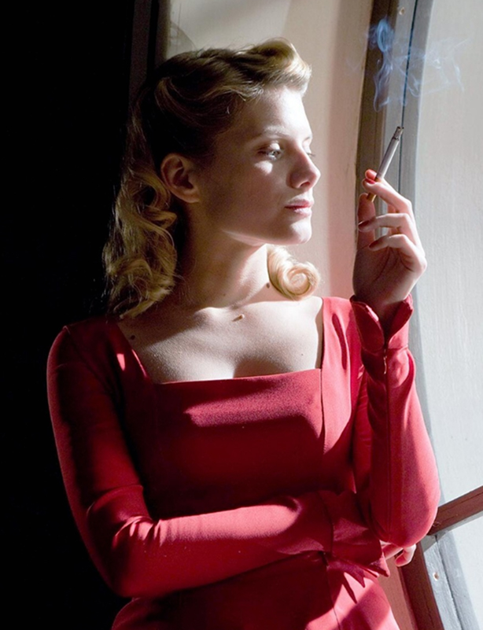
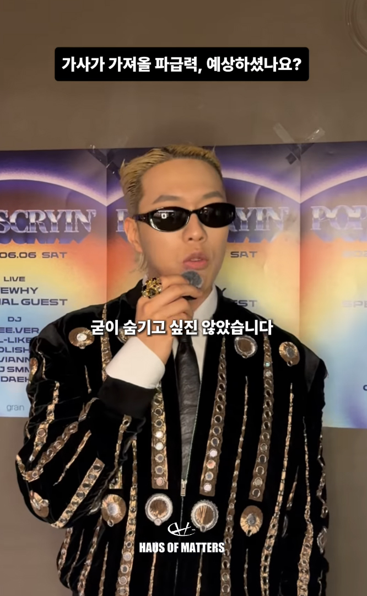
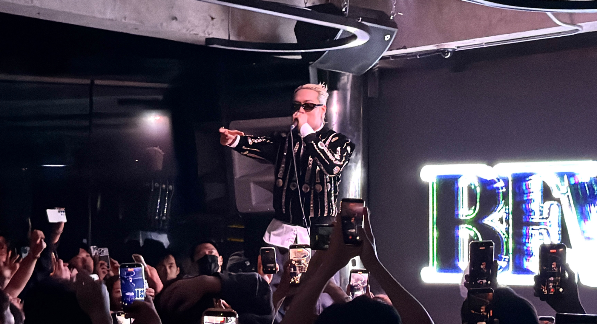

안녕하세요, 비와이 님! 인터뷰에 참여해 주셔서 감사합니다. 간단한 자기소개 부탁드리겠습니다.
안녕하세요. 대한민국의 평범한 아빠로 살아가고 있는 래퍼 비와이입니다.
'평범한 아빠'라고 소개해 주셨네요(웃음). 많은 분들이 예전 비와이 님을 슈퍼스타로 기억했다면, 이제는 한 가정의 아버지가 되셨네요. 이러한 삶의 변화는 어떤 의미로 다가오셨나요?
주변에서 정말 많이 듣는 말이 있어요. 결혼하고 아이 낳으면 감 떨어진다, 이제 이룰 건 다 이뤘으니 가정에 충실해야 한다는 이야기들이요. 음악뿐 아니라 다른 업계에서도 가정이 생기면 에너지가 분산될 수밖에 없다는 말을 많이 하죠. 그런데 저는 늘 이런 생각을 했어요. '정말 둘 다 가질 수는 없는 걸까?' 이번 앨범도 가정이 생긴 이후에 만들어졌잖아요. 과연 가장으로서의 삶과 창작자로서의 삶이 서로 양립할 수 없는 것인지 계속 고민하게 되더라고요.
제 주변에 정말 성공한 사업가분들이 많이 계십니다. 그런데 이분들의 공통점이 있어요. 자신의 삶에 대한 기준이 명확하고, 굉장히 철두철미하며, 무엇보다 ‘가정적인 분들’이라는 거예요. 그걸 보면서 '아, 이런 분들이 성공하는구나'라는 결론에 도달했습니다. 가정에 충실한 좋은 가장은 사회에서도 성공하지 못할 이유가 없다는 거죠. 물론 그만큼 어렵기 때문에 대단한 일이기도 하고요. 그래서 저는 슈퍼스타의 삶과 아빠의 삶을 따로 떼어놓고 싶지 않았어요. 이번 앨범을 만들면서도 이 두 가지를 하나로 묶어 살아가고 싶다는 생각을 많이 했어요.
그 과정에서 삶의 방식도 많이 달라졌어요. 예전에는 일부러 바쁘게 살았거든요. 미팅도 많이 갖고, 저한테 큰 도움이 되지 않는 방송이나 일정도 가리지 않고 소화했는데, 지금은 어떤 선택이 더 가치 있는지 분별하려고 합니다. 조금 더 효율적으로 시간을 쓰고, 정말 중요한 일에 집중하려고 하죠. 먼 미래를 돌아봤을 때 가장으로서의 삶과 슈퍼스타로서의 삶을 함께 보여줄 수 있는 사람으로 성장해 있는 것이 지금 제 개인적인 목표입니다.
앨범이 공개된 지도 어느덧 시간이 흘렀습니다. 보통 앨범 발매 전후로 활발하게 활동하는 모습을 보여주는데, 이번에는 그런 활동이 조금 줄어든 듯한 인상이었어요.
사실 저도 여러 곳에 연락을 드리고 다양한 기회를 만들어보려고 했지만, 현실적으로 어렵겠다는 답변을 받은 경우가 꽤 있었습니다. 방송을 만드는 쪽에서 저를 조금 어려워했던 것 같아요(웃음). 제가 했던 발언에 대해 리스크가 있다고 판단할 수도 있고요. 그런데 그런 반응도 충분히 이해합니다. 그 책임 역시 제가 감수해야 한다고 생각하고 있거든요. 무엇보다 누군가에게 피해가 가는 상황을 만들고 싶지 않았어요.
사실 이 이야기는 뒤에서 조금 더 나눠보려고 했는데요. 지방선거 이슈까지 겹치면서 비와이 님과 관련한 여러 이야기가 오갔잖아요. 그런 상황들을 보면서 '내 음악이나 내 발언이 이런 방식으로도 활용될 수 있겠구나'라는 점 역시 어느 정도 예상하고 계셨던 건가요?
'이 이야기를 하면 결국 이런 반응이 나오겠구나'라는 생각은 하고 있었어요. 어떻게 보면 자연스러운 일이라고 생각해요. 특히 지금 우리나라에서는 정치가 굉장히 조심스러운 영역이 된 것 같습니다. 어떻게 보면 종교처럼 받아들여지는 측면도 있는 것 같아요. 그래서 호불호가 굉장히 크게 갈릴 수밖에 없는 주제라고 생각하고 있어요.
하지만 앨범을 들어보시면 아시겠지만 저는 음악 안에서 최대한 '정치적'으로 느껴질 수 있는 포인트에 대해 경계하려고 했어요. 제가 생각하는 '정치적인 것’과 '정치'는 다른 개념입니다. 정치라는 말의 본래 의미는 '다스림'이라고 생각해요. 어떤 다스림 아래에서 살아갈 것인가를 이야기하고 싶었고, 저는 하나님의 다스림을 원하는 거죠.
제 삶의 기준은 결국 성경입니다. 성경이 말하는 하나님의 다스림은 개인의 삶에만 머무는 것이 아니라 음악, 교회, 사회, 국가, 더 나아가 세상까지 이어지는 것이라고 믿습니다. 그렇기 때문에 저는 복음을 어떤 영역으로 한정해서 이야기하고, 다른 영역과는 분리해서 이야기해야 한다는 생각에 개인적으로 동의하지 않아요. 제게는 이 모든 것이 하나로 연결되어 있기 때문이에요.
개인적으로 조금 아쉬웠던 부분이 이번 작품은 비와이라는 한 사람의 서사를 담은 작품이라고 생각했거든요. 그렇기에 작품 속 메시지가 다소 가려진 것 같아 아쉬웠습니다. 그래서 이번 인터뷰에서는 논란을 넘어, 비와이 님이 이번 앨범을 통해 정말 하고 싶었던 이야기가 무엇인지를 중심으로 이야기를 나눠보고 싶었네요.
방금 '아쉬웠다'고 말씀해 주셨잖아요. 사실 그런 반응까지도 어느 정도 예상하고 만든 앨범입니다. 왜냐하면 사람들이 비와이의 음악적인 부분이나 서사가 충분히 이야기되지 못해서 아쉽다고 말하는 것은 역설적으로 그 부분이 중요하다는 걸 이야기하는 거잖아요. 사람들은 자연스럽게 '그렇다면 그 이야기에 무엇이 담겨 있을까?'라는 궁금증을 갖게 되겠죠. 제가 직접 나서서 ‘이번 앨범에는 이런 서사가 있고, 이런 음악적인 변화가 있습니다.’라고 설명하지 않아도, 팬들이 오히려 그 이야기를 대신 꺼내주게 되는 거죠.
실제로 이번 앨범을 통해 새롭게 유입된 분들 가운데는 힙합을 잘 모르거나, 원래 힙합에 큰 관심이 없었던 분들도 굉장히 많아요. 앨범 발매 이후 팔로워도 많이 늘었는데, 저는 이 모습이 10년 전 <쇼미더머니> 때와 굉장히 비슷하다고 느꼈어요. 개인적으로 당시를 돌아보면, 제가 충실한 믿음 아래 거룩한 삶을 살았기 때문에 하나님께서 축복해 주셨다고만 생각했어요. 물론 그것도 완전히 틀린 말은 아닙니다. 성경에도 하나님의 말씀에 순종하는 삶이 형통으로 이어질 수 있다고 기록되어 있으니까요.
하지만 지금 돌아보면 단지 그 이유 때문만은 아니었던 것 같습니다. 모두가 동그라미를 이야기할 때 저는 혼자 세모를 이야기한 사람이었어요. 그래서 사람들이 저에게 관심을 가지고 음악을 들어봤는데 음악도 마음에 들었던 거죠. 특히 당시에는 크리스천 분들의 유입이 굉장히 많았거든요. 이후에는 교회에서도 힙합을 기반으로 한 공연이나 페스티벌이 생기기 시작했고요. 미국에서는 이미 크리스천 뮤직이 하나의 장르로 자리 잡았잖아요. 블랙 가스펠도 있고, 힐송같은 워십 음악도 있고요. 다양한 장르가 모여 하나의 문화권을 이루고 있습니다. 어떻게 보면 저는 그 흐름의 시작점 가운데 하나였지 않나 생각해요. 이번에도 비슷한 현상이 일어나고 있는 것 같아요. 차이가 있다면 예전 '나는 하나님을 믿는다', '내 믿음의 기반은 성경이다' 에서 나아가, 지금은 성경이 담고 있는 ‘세계관’ 자체를 이야기하고 있다는 점입니다.
예전에는 ‘하나님께서 내 꿈을 이루어 주실 것이다.’처럼 개인의 믿음과 꿈에 대한 이야기가 많았다면, 지금은 삶 전체를 바라보는 성경적 세계관으로 확장됐다고 생각해요. 그래서 당연히 말도 많을 수밖에 없죠. 저는 이런 이야기들을 더 많은 사람들이 알았으면 좋겠거든요. 문제는 음악만으로는 그걸 모두 전달하기가 어렵다는 거예요. 큰 자본이 있는 것도 아니고, 광고비를 많이 쓰면서 계속 노출시킬 수 있는 상황도 아닙니다. 그러다 보니 음악 안에서 사람들의 관심을 끌 수 있는 요소를 고민하게 됐어요. 물론 어그로를 끌기 위해 그런 요소를 사용했다고 볼 수도 있겠습니다. 하지만 그것만을 목적으로 한 것이 아닌, 제 삶과 신앙의 방향을 이야기하는 데 있어서도 반드시 필요한 내용이었기 때문에 담은 것이고, 공교롭게도 사람들이 예상했던 방향으로 반응한 거죠. 그래서 오히려 이런 이야기가 저에게는 도움이 됩니다. 그 말이 나올수록 사람들은 결국 앨범 자체에 더 관심을 갖게 되니까요. 그래서 그런 이야기를 해주시는 분들께 오히려 감사한 마음이 있습니다.
10년 전에는 '나는 하나님을 믿는다.'는 믿음 자체를 이야기했다면, 이번 앨범에서는 비와이 님이 자신의 생각과 주장을 먼저 이야기하고, 그 생각이 어디에서 비롯됐는지를 함께 설명하더라고요. 마치 에세이처럼 주장이 있고, 그 주장을 뒷받침하는 근거가 있습니다. 그리고 그 근거가 바로 성경인 거죠. 그래서 이전 작품들과 비교했을 때 작사의 문법 자체가 굉장히 달라졌다는 인상을 받았어요.
정말 정확하게 보신 것 같아요. 그렇게 말씀해 주시니까 신기하기도 하고 굉장히 기분이 좋네요. 저도 이번에는 작사를 하는 방식 자체를 많이 바꾸려고 노력했습니다. 어떤 말을 하기 전에 내가 왜 이런 생각을 하게 됐는지를 고민하는 시간이 많아졌어요. 그 생각이 어디에서 비롯됐는지를 먼저 들여다보려고 했습니다. 이렇게까지 정확하게 읽어주신 게 정말 감사하고 기분이 좋네요(웃음).
결국 스스로에게 '왜?'라는 질문을 정말 많이 던지게 되신 것 같네요. '나는 왜 이런 생각을 하지?', '이 생각의 근원은 어디에서 왔을까?'를 계속 고민하신 것 같아요.
정말 그런 질문을 많이 합니다. '내가 왜 이 사람을 좋아하지?', '왜 이런 선택을 하고 싶지?', '왜 사람들은 이렇게 생각하지?' 같은 질문들을 하루 종일 해요. 모든 생각의 이유를 계속 고민하는 편입니다. 그래서 그런지 머릿속에 정보가 너무 많아요. 생각은 정말 많이 하는데, 오히려 말을 할 때는 그걸 잘 정리해서 조리있게 이야기하지 못하는 경우가 생기더라고요(웃음). 머릿속에서는 이 이야기와 저 이야기가 다 연결돼 있는데, 말로 하다 보면 여기 갔다가 저기 갔다가 하니까 듣는 사람 입장에서는 오해할 여지가 생기는 거죠.
얼마 전에 다른 미디어에서 제가 “성경도 의심해 본다.”는 말을 한 적이 있는데, 그걸 성경을 불신한다는 의미로 받아들이는 분들이 계시더라고요. 예를 들어 고린도전서에서는 여자들이 머리를 짧게 자르지 말라는 내용이 나옵니다. 그 문장만 보면 단순히 '여자는 머리를 짧게 자르면 안 된다'고 받아들이기 쉽잖아요. 하지만 당시 고린도 지역에서는 몸을 파는 여성들이 거의 삭발에 가까운 짧은 머리를 하고 다녔다고 해요. 그러니까 저는 시대적 배경과 지역적 맥락까지 함께 이해해야 한다는 의미로 '의심해 본다'는 표현을 쓴 거예요. 그렇게 접근해야 왜 그런 말씀이 기록됐는지 더 정확하게 이해할 수 있으니까요. 이미 회심한 사람이 새로운 삶을 살아가려는데, 당시 사람들에게는 짧은머리 만으로도 오해를 살 수 있는 상황이잖아요. 그런 상황을 고려해서 바울이 권면한 것이라고 저는 이해하고 있습니다. 결국 제가 당시 하고 싶었던 말은 성경을 의심하자는 것이 아니라, 충분히 이해하고 읽자는 것이었거든요. 그런데 그걸 '성경도 의심해 보자'라는 표현으로 이야기하다 보니 오해가 생긴 것 같습니다.
사실 이런 맥락을 짧은 팟캐스트 안에서 전부 설명하기는 어려워요. 그러다 보니 그런 오해들이 생기는 것 같고, 결국 생각을 잘 편곡해서 전달하는 능력이 아직 부족한 것 같다는 생각도 합니다. 그래서 말하는 건 글을 쓰는 것과는 전혀 다른 영역인 것 같아요.
생각이 많아질수록 머릿속에서는 여러 생각들이 다 연결되어 있는데, 그걸 주어진 시간 안에 조리 있게 이야기해야 하잖아요. 그 과정에서 연결을 충분히 못 하면 듣는 사람 입장에서는 횡설수설하는 것처럼 들릴 수도 있고요. 시간을 들여 글을 쓰는 것과, 즉석에서 말을 하는 건 완전히 다르니까요.
맞습니다. 그래서 이번에는 작사의 문법 자체도 기존과는 많이 달라졌어요.
아무래도 글은 시간을 들여 다듬을 수 있으니까, 말처럼 횡설수설할 일이 적겠네요(웃음).
그런 차이가 있죠. 음악에는 근거를 충분히 담아둘 수 있으니까요. 단어 하나도 정말 오래 고민합니다.
특히 저는 도치를 굉장히 많이 생각해요. 한국어는 문장 순서를 바꿀 수 있는 언어잖아요. 도치를 어떻게 하느냐에 따라 문장의 온도가 달라져요. 예를 들어 "내가 너를 사랑해."라는 문장도 억양이나 순서에 따라 완전히 다른 감정으로 들릴 수 있잖아요. 가사는 그런 온도를 글로 표현하는 작업이라고 생각해요. 그래서 저는 문장 앞뒤를 계속 바꿔보면서, 도치를 통해 원하고자 한 뉘앙스를 만들어내려고 했던 것 같습니다.

방금 말씀처럼 글을 통해 자신의 생각을 더 깊게 표현하게 되셨다고 하셨잖아요. "저는 실패했습니다."라는 문장으로 기억되는 인스타그램 글이 마침 떠오르는데요. 어떻게 보면 그 글 자체가 이번 앨범의 시작점이기도 했던 것 같네요.
글을 올릴 당시에는 이미 모든 결단을 끝낸 상태였습니다. 그 글을 쓰게 된 과정부터 이야기해야 할 것 같아요.
<쇼미더머니> 이후 잘되기 시작했고, 데자부를 설립해서 운영하고, 문을 닫기까지 약 10년 정도의 시간이 있었는데 그동안 저는 약점을 드러내면 안 된다는 강박이 굉장히 심했어요. 많은 분들께서 제가 자존감이 높은 사람이라고 생각하시는데, 오히려 반대였어요. 자존감이 높지 않았기 때문에 강한 사람인 척 연기했던 시간이 더 많았던 것 같습니다. 제 부족한 모습이 드러나면 그걸 인정하기보다 감추고 싶었고, 덮으려 했던거죠. 물론 지금도 그런 마음이 전혀 없는 건 아니지만, 그때는 훨씬 심했어요. 래퍼라는 직업의 특성상 약한 모습을 보이고 싶지 않았고, 이른바 '가오'를 지키려는 마음이 컸던 거죠. 그러다 보니 사람들이 이해하지 못하거나 비판하는 부분도 '내가 부족해서 그런가?'라고 돌아보기보다는 그냥 무시하고 지나갔던 경우가 많았어요. 데자부의 아티스트 영입에 대한 비판도 그랬고, 제 음악에 대한 피드백도 마찬가지였고요.
특히 예전에는 랩적인 측면에서 완급 조절에 대한 이야기를 정말 많이 들었는데, 음절 수가 너무 많다거나 랩이 비슷하게 들린다는 피드백이 있었잖아요? 그때는 그런 피드백들을 전혀 받아들이지 않았어요. 내 랩은 매번 달랐다고 스스로를 설득하면서 계속 부정했던 것 같습니다. 그런데 이제는 그런 피드백도 다시 들여다보려고 해요. 사실은 무서웠던 거죠. 제 부족함을 인정하는 것이.
그래서 데자부를 정리하기로 결심하면서 처음으로 숨기는 건 멋있는 것이 아니다, 라는 생각을 했어요. 있는 그대로 인정하고, 실패와 실수를 인정하고 다음 단계로 나아가는 것이 오히려 더 멋진 모습이라는 것을 깨달은 거죠. 발전의 시작은 결국 인정이라고 생각해요. 사실 집에서도 아내와 가장 많이 다투는 이유가 그거예요. 제가 잘못을 하면 인정하기보다 계속 설명을 하더라고요. 변명이라기보다 계속 이유를 이야기 하는거죠. 그러면 아내는 "무슨 설명인지는 알겠는데, 결국 잘못한 건 맞잖아. 왜 인정하지 않느냐."고 말하고요(웃음). 생각해 보면 저는 그런 삶을 오래 살아왔던 것 같네요.
예전에 지문 검사와 뇌 검사를 받은 적이 있었는데, 거기서도 제가 고집이 굉장히 강한 사람이라는 결과가 나왔어요. 제 기질 자체가 고집을 내려놓는 게 거의 불가능한 성향이라고 하더라고요. 그런데 결국 그 고집 때문에 제가 가장 힘들다는 걸 깨달았습니다. 그래서 한 번 결단을 내린 거죠. 인정하자고. 그리고 그 과정을 하나의 드라마처럼 사람들에게 보여주고 싶었습니다. 이번 앨범은 거기서부터 시작됐던 것 같네요.
어떻게 보면 앨범을 위한 빌드업이면서, 동시에 자기 자신을 인정하고 한 걸음 더 나아가는 과정이기도 했던 거네요.
둘 다 맞아요. 앨범을 위한 빌드업이기도 했고, 제 자신을 인정하는 과정이기도 했죠. 제 앨범은 늘 저에 대한 이야기였으니까요.
돌이켜보면 매 작품마다 하나의 상황을 제시하고, 그 안에서 어떻게 성장해 왔는지를 계속 보여주셨던 것 같습니다.** **인터뷰 전에 인스타그램 피드를 다시 봤는데요. 그 글로 시작해서 이번 앨범으로 이어지는 흐름 자체가 너무 자연스럽더라고요. 설명하기 어려운 멋이 있었습니다. 흔히 말하는 '간지'와는 또 다른 영역의?(웃음)
지금까지의 래퍼들이 성공만 이야기했다면, 저는 이번에는 실패를 이야기하고 싶었어요. 요즘 힙합을 보면 돈을 얼마나 벌었는지, 얼마나 유명한지, 얼마나 나쁜 남자인지, 얼마나 마초적인지 같은 이야기들이 굉장히 많잖아요. 예전에는 그런 이야기들이 분명 매력적이었는데 지금은 그런 이야기에서 더 이상 큰 도파민이 나오지 않는 것 같아요. 솔직히 말하면 정말 크게 성공했다 하더라도 세상에는 그보다 더 큰 부자들이 얼마든지 있고, SNS에는 더 화려한 삶들이 계속 보이잖아요. 그러다 보니 이런 성공담만으로는 사람들의 마음을 크게 움직이지 못하는 것 같습니다.
그런 표현들에 대한 역치가 굉장히 높아진 거죠. 그래서 저는 “Am I”후반부가 개인적으로 정말 짜릿했습니다. 일반적인 래퍼들의 클리셰와 지금의 비와이 님의 삶을 계속 대비시키잖아요. 결국 '나는 힙합을 하지만, 너희와는 다른 방식으로 살아간다.'는.
지금의 제가 그런 이야기를 하는 것도 사람들에게는 충분히 새로운 멋으로 다가갈 수 있겠다는 생각을 했거든요.
이걸 TV 채널에 비유하고 싶어요. 하루 종일 액션 영화만 틀어주는 채널이 있다고 생각해 보세요. 처음에는 재미있지만 계속 보다 보면 결국 질리게 되잖아요. 그런데 채널을 돌렸더니 야구도 나오고, 드라마도 나오고, 전혀 다른 이야기가 나오면 그게 오히려 더 신선하게 느껴지는 거죠.
정말 좋은 비유네요(웃음). 도파민이 너무 많아지면 오히려 그게 더 이상 도파민이 아니게 되는 것 같아요. 딱 그런 느낌이었습니다. 생각해 보면 10년 전과 지금도 조금 비슷한 것 같습니다. 정말 좋은 비유 감사합니다.
데자부를 정리한 이후, 다시 한 명의 창작자로 돌아오셨습니다. 그리고 새롭게 Opus Magnum이라는 이름을 내걸게 되셨는데요. '걸작'이라는 의미를 가진 이름이기도 하고, 이전에 <The Movie Star>에서도 스스로를 거장-장인이라고 표현하신 적도 있었잖아요. 그런 점에서 두 키워드가 자연스럽게 이어지는 것 같았습니다. Opus Magnum이라는 이름은 어떻게 탄생하게 되었나요?
원래 표현은 Magnum Opus예요. 저는 Magnum Opus보다 Opus Magnum이 입에 더 잘 붙었는데 라틴어는 어순을 바꿔도 의미가 크게 달라지지 않는다고 하더라고요. 미국에서 활동하는 프로듀서 친구가 있는데, 그 친구가 예전에 비슷한 표현을 사용한 적이 있었어요. 그걸 듣고 굉장히 멋있다는 생각을 했죠.
저는 사람들에게 특정 단어가 무엇을 연상시키는지를 굉장히 중요하게 생각해요. 'Magnum'이라는 단어만 들어도 묵직한 무게감이 있고, 강력한 이미지가 떠오르잖아요. 그런 단어를 사용하면 사람들이 자연스럽게 특별한 분위기를 느낄 수 있겠다고 생각했습니다. 그리고 원래 Magnum Opus라는 말 자체가 단순히 '걸작'이 아니라 '걸작 중의 걸작', 말 그대로 Masterpiece of Masterpieces라는 의미잖아요. 세상에 하나뿐인 작품이라는 뜻이죠. 모든 아티스트가 그렇겠지만 저 역시 그 지점을 향해 가고 싶거든요.
이번 앨범의 “배있길 보우”에서 오케이션 형이 최고가 되는 것에 대한 집착을 내려놓았다는 내용의 가사를 썼는데, 저는 오히려 최고를 포기하는 것에 대한 집착을 내려놓았습니다(웃음). 그래서 지금도 항상 최고가 되고 싶어요. 음악은 물론이고, 제 삶에서도, 음악이 아닌 다른 작업에서도 걸작 중의 걸작을 만들고 싶습니다. 그 생각 때문에 이 표현을 사용하게 됐고, 새로운 출발을 Opus Magnum이라는 이름과 함께 시작하고 싶었습니다. 어떻게 보면 2.0 비와이의 시작인 셈이죠.
말씀하신 것처럼 '걸작'을 만든다는 건 한 작품에 모든 에너지를 쏟는 일이라고 생각이 들어요. 데자부를 정리한 뒤에는 CEO의 역할을 내려놓고, 다시 한 명의 창작자로 돌아오셨잖아요. 그 이후 작업 환경이나 창작 방식에는 어떤 변화가 있었나요?
사실 저는 제가 CEO 역할을 잘 수행했다고 생각하지는 않습니다. 실질적인 CEO 역할은 이사님이 대부분 맡아 주셨어요. 그래서 환경 자체가 크게 변하진 않았지만 심리적인 부분이 정말 많이 달라졌어요. 이제는 다른 환경에 대해 신경 쓰지 않아도 됩니다. 오롯이 저와 가족, 삶에만 집중하면 되니까요. 예전에는 여러 곳으로 에너지가 분산됐다면, 지금은 그렇지 않습니다. 에너지가 쓸데없이 분산되지 않는다는 것, 창작에만 집중할 수 있게 된 심리적인 안정감이 가장 큰 변화인 것 같네요.

앞서 말씀해주신 변화가 있었기 때문에 이번 앨범도 탄생할 수 있었던 것 같습니다. 그럼 이제 본격적으로 [POP IS CRYIN']에 대한 이야기를 나눠보려 해요. 먼저 이번 앨범을 한 문장으로 소개해주신다면 어떤 작품이라고 말씀하시고 싶으신가요?
많은 래퍼들이 비슷한 이야기를 하잖아요. 예를 들어 Future 같은 아티스트는 여자 이야기, 돈 이야기, 자신의 삶에 대한 이야기를 계속합니다. 그런데도 매번 새롭게 들려요. 저는 그게 힙합의 매력이라고 생각하거든요.
사실 저는 제 삶이 특별하다고 생각하지 않아요. 오히려 굉장히 보편적인 삶이라고 생각해요. 이번 앨범은 한국에서 아주 평범하게 살아온 한 사람의 이야기죠. 평범한 가정에서 태어나 초등학교, 중학교, 고등학교를 다니고, 입시를 준비하고. 그러다 힙합을 좋아하게 되고, 같은 음악을 좋아하는 친구들을 만나 랩을 시작하고, 방송에 나가 기회를 얻고, 회사를 차렸다가 실패도 해보고. 결국 소재만 힙합일 뿐이지 삶 자체는 다른 사람들과 크게 다르지 않다고 생각해요. 저 역시 <쇼미더머니>라는 면접을 본 셈이니까요.
그런 의미에서 이번 앨범은 평범한 대한민국 남자의 이야기라고 생각합니다.
다만 그 직업이 ‘래퍼’일 뿐인 거네요.
맞아요. 저는 그냥 랩을 하는 사람일 뿐이고, 동시에 크리스천일 뿐입니다. 그 이상도, 그 이하도 아니에요.
타이틀에 대해서도 여쭤보고 싶습니다.<POP IS CRYIN'>는 굉장히 다양한 의미로 읽히는데요. 'Pop'은 대중음악을 뜻할 수도 있고, 아버지(Father)를 의미할 수도 있고, 'Cryin'' 역시 울다와 외치다라는 두 가지 의미를 모두 품고 있잖아요. 비와이 님이 생각하시는 이 제목의 핵심적인 의미는 무엇인가요?
굳이 하나로 정하고 싶지 않고 싶어요. 말 그대로 우는 아버지, 외치는 아버지도 있을 수 있고, 'Pop' 역시 대중음악(Pop Music)을 의미할 수도 있습니다. 저는 보편적인 삶, 다시 말해 많은 사람들이 살아가는 삶을 이야기하고 싶었어요. 그래서 그런 의미를 모두 담고 싶었습니다.
사실 흑인 문화에서는 아버지를 'Pops'라고 부르기도 하잖아요. 그래서 처음에는 타이틀에 'Pops'를 사용할까도 생각했는데, 일부러 사용하지 않았어요. 요즘 한국 래퍼들도 흑인식 표현을 그대로 가져다 쓰는 경우가 있지만 저는 그런 부분을 조심하려고 해요. 물론 힙합이 흑인 문화에서 시작된 것은 맞지만 지금의 힙합은 다양한 인종과 문화가 함께 만드는 음악이 됐잖아요. 그렇기 때문에 저는 무조건 흑인식 표현을 따라 하는 것은 조금 경계할 필요가 있다고 생각합니다. 우리의 삶과 그들의 삶은 분명 다르니까요.
그래서 아까 이야기했던 것처럼 단어 하나를 선택할 때도 계속 고민합니다. 'Pops'를 쓸 것인가, 'Pop'을 쓸 것인가. 결국 저는 'Pop'이 조금 더 많은 의미를 담을 수 있는 단어라고 생각했어요. 그리고 사람들이 제목을 하나의 의미로 단정 짓기보다는, 누군가는 이렇게 읽고, 또 다른 누군가는 저렇게 읽을 수 있는 제목이었으면 좋겠다고 생각했습니다.
하나의 정답을 제시하기보다, 보는 사람마다 각자의 방식으로 해석할 수 있는 제목이길 바라셨던 거군요.** **앨범 커버에 대한 이야기도 여쭤보고 싶습니다. 커버를 보면 전체적인 색감이나 스타일이 레트로 퓨처리즘(Retro Futurism)을 연상시키더라고요. 과거에서 바라본 미래 같은 감성이 느껴졌는데요.
이번 앨범의 프로덕션을 들어보시면 아시겠지만, 저는 예전 펑크 밴드나 신스팝 밴드들이 사용하던 아날로그 신디사이저와 연주 기반의 사운드에 굉장히 큰 영향을 받았어요. 이번 앨범의 사운드는 펑크(Funk)에서부터 출발했다고 생각해요. 그 장르를 공부하다 보니 대부분의 음악이 연주를 중심으로 만들어진다는 걸 알게 됐고, 저도 그런 접근 방식을 시도해 보고 싶었습니다. 특히 <032 Funk>가 70년대 펑크의 감성을 많이 담고 있었다면, 이번에는 80~90년대 펑크의 감성이 많이 담겼네요. 군대에 있을 때 선임과 후임들에게 이런 연주 기반 음악을 정말 많이 추천받았고, 그 영향을 많이 받았습니다. 기존에는 808 베이스를 중심으로 사운드를 만들었다면, 이번에는 베이스 자체도 직접 연주해서 그루브를 살리는 방향으로 작업을 많이 했어요. 그러다 보니 자연스럽게 그 시대의 비주얼에도 관심이 생겼습니다.

원래도 빈티지한 것을 굉장히 좋아하는데, 특히 영화 <제5원소>를 정말 좋아해요. 그 영화는 미래를 그리지만, 그 미래를 과거의 상상력으로 표현하잖아요. 지금 우리가 맞이한 미래는 스마트폰을 비롯한 최신 기술이 함께하는 현재인데, 당시에는 완전히 다른 방식으로 미래를 상상했잖아요. 그런 과거에서 미래를 바라보는 상상력이 너무 흥미로웠어요. 그래서 저도 과거의 요소를 가져와 지금의 감각과 섞는 것, 그 자체가 오히려 새로운 진보가 될 수 있겠다고 생각했습니다. 사실 힙합도 그렇게 발전해 온 음악이잖아요. 샘플링이라는 것도 결국 과거의 음악을 현재와 섞어 새로운 것을 만드는 방식이니까요. 그래서 저는 힙합의 기본 문법을 유지하면서도, 펑크에서 느껴지는 감성과 사운드를 적극적으로 가져오려고 했어요. 원래 그런 음악을 좋아하기도 했고, 특히 그레이 형에게도 다양한 장르를 많이 배우면서 영향을 받았습니다.
사실 지금 생각해 보면 <The Movie Star>도 그런 흐름 안에 있었어요. 예를 들어 “Forever”가 하나의 앨범으로 확장된다면 어떤 모습일까를 상상한 결과가 <The Movie Star>였고, “Day Day”가 확장된 형태가 <032 Funk>였다고 생각해요. 그리고 그 흐름이 조금 더 현대적인 전자 사운드와 만나 발전한 결과가 이번 <POP IS CRYIN'>인 거죠.
그래서 앨범을 들어보시면 어떤 분들은 하이퍼팝이나 레이지같다고 말씀하시기도 하는데, 분명 겹치는 지점은 있습니다. 하지만 예전 펑크 음악을 들어보면 지금은 하이퍼팝에서 많이 사용한다고 생각하는 아르페지오 신스나 다양한 신디사이저 연주가 이미 굉장히 많이 사용되고 있어요. 다만 그때는 그런 사운드가 메인 루프로 사용되지 않았을 뿐입니다. 저는 그런 요소들을 앞으로 가져와 메인으로 차용해 봤고, 만들면서 오히려 '이게 지금의 음악과도 이어질 수 있구나'라는 걸 알게 됐습니다. 그래서 한편으로는 사람들이 이걸 단순히 '하이퍼팝', '레이지'라고만 받아들이면 어떡하지? 하는 고민도 있기는 했어요.
하지만 결국 제가 하고 싶었던 건 과거의 방식으로 미래를 상상하는 것, 그리고 그 감각을 음악과 비주얼 모두에 담아내는 것이었습니다. 다만 이번 앨범은 작업 기간이 워낙 길었기 때문에, 만들면서 생각도 계속 바뀌었어요. 사실 커버아트도 처음부터 지금의 커버였던 건 아니에요. 중간에 다른 시안들도 정말 많이 있었습니다.
앨범 커버 시안이 100개 정도 있었다고..
정확한 숫자는 모르겠는데 진짜 많았어요. 그만큼 고민을 많이 한거죠. 사실 저는 레트로 퓨처리즘이라는 영역이 굉장히 어려운 분야라고 생각해요. 왜냐하면 The Weeknd처럼 이미 그 분야에서 너무 잘하는 아티스트가 있잖아요. 그분은 음악적으로나 비주얼적으로나 레트로퓨처리즘을 지금 시대의 방식으로 정말 완벽하게 재해석했다고 생각해요. 원래부터 신스팝을 꾸준히 해왔던 아티스트이기도 하고. 그만큼 쌓아온 아카이브가 정말 탄탄할 거예요. 게다가 미국은 이런 분야를 전문적으로 하는 사람들도 굉장히 많다 보니 완성도 자체가 워낙 높아요. 그래서 저도 한편으로는 걱정이 있던 게, 사람들이 ‘The Weeknd 따라 했네’라고 생각하면 어떡하지? 라는 고민도 했죠. 그런데 결국 뿌리는 같은 음악이라고 생각했습니다. 저 역시 그 시대의 음악을 정말 좋아했고, 그 안에 담긴 감성과 사운드를 제 방식으로 표현하고 싶었어요. 특히 아날로그 사운드를 디지털로 번역하는 감각, 그 시대의 정서를 지금의 방식으로 담아내고 싶었습니다. 그런 고민들이 쌓이면서 지금의 커버가 나온 것 같습니다.

성흔(Stigmata)이 있는 예수님의 손과 더불어 많은 의미가 담겨 있는 것 같아요.
제가 트랙리스트를 공개했을 때도 보시면, 수정란이 분열하면서 점점 세포가 늘어나는 형태를 힌트처럼 넣어뒀거든요. 생명이라는 것은 결국 하나님만이 주실 수 있는 것이라고 생각해요. 하나님께서 허락하셔야만 생명이 시작될 수 있는 것이니까요. 그래서 예수님께서 그 생명을 축복하고 계신다는 의미를 담았습니다.
결국 사람의 행위로 만들어지는 모든 것, 우리의 삶과 생명 모두가 예수님의 다스림 안에 있다는 것을 하나의 이미지로 표현하고 싶었어요. 앞서 이야기했던 것처럼 예수님의 정치, 다시 말해 예수님의 다스림 아래에 있다는 의미를 비주얼로 보여주고 싶었던 거죠.
커버에 등장하는 성흔이 있는 손은 예수님의 손인 동시에, 비와이 님 자신을 상징하는 손이기도 한 걸까요?
제 손이 아니에요. 제 손에는 못자국이 없습니다(웃음). 그 손은 예수님의 손입니다.
이번 앨범은 비와이 님에게 '새롭게 태어남'에 대한 이야기이기도 한 거네요.
기독교의 핵심 가운데 하나가 거듭남(Born Again)이라고 생각해요. 예수님을 향한 믿음을 통해 나의 죄가 예수님께로 가고, 그 죄를 예수님께서 십자가에서 대신 짊어지고 돌아가신 거죠. 그 죽음을 통해 우리의 죄도 함께 죽은 것입니다. 하지만 거기서 끝난다면 사실 예수님을 믿을 이유가 없어요. 예수님은 부활하셨고, 우리는 그 부활을 믿는 것입니다. 우리의 육신은 결국 죄에 속해 있기 때문에 죽을 수밖에 없지만, 예수님을 믿는 믿음을 통해 다시 살아난다는 것.
그래서 이번 앨범에서도 '다시 태어남'을 이야기하고 싶었어요. 하지만 그 거듭남을 가능케 하는 존재는 예수님입니다. 부활도, 구원도, 새로운 삶도 인간이 스스로 만들어낼 수 있는 것이 아니라는 것. '나 혼자서는 할 수 없다.' 이번 앨범에서 계속 이야기하고 있는 것도 바로 그 부분입니다.
부활을 이야기하기 위해서는 먼저 죽음이라는 과정이 필요하잖아요. 이번 앨범에서는 그 '죽음'이 비와이 님이 겪었던 실패로 이어지는 것처럼 느껴졌습니다. 첫 번째 트랙 “Sweet Escape”에서도 현재의 상황을 먼저 보여준 뒤, 그 이야기가 자연스럽게 이어지고요. 앞선 이야기에서 어느 정도 답을 해주시긴 했지만, 비와이 님에게 이번에 겪은 실패는 어떤 의미였나요?
보통은 성공의 반대가 실패, 실패의 반대가 성공이라고 생각하잖아요. 저는 이제 그렇게 생각하지 않습니다. 실패는 성공의 반대가 아니라, 성공으로 가는 과정이라고 생각해요. 예전에는 실패를 경험했을 때 '나는 성공하지 못했다'고 결론을 내렸어요. 하지만 지금은 달라요.
'성공하지 못했다'가 아니라, '성공에 더 가까워졌다.'
그렇게 생각해요. 지금의 저에게 실패는 성공으로 가는 가장 좁은 문입니다. 그 이상도, 그 이하도 아닙니다.
그래서 가사에서도 '실패한 놈'이 아니라…
'실패 해본 놈'인 거죠(웃음).
결국 그 실패가 하나의 경험으로 승화되면서 지금의 비와이 님이 만들어진 셈이네요. 하지만 당시에는 굉장히 많은 감정을 느끼셨을 것 같습니다. 뜻대로 되지 않는 일도 많았을 테고, 그 과정에서 여러 감정들이 쌓였을 텐데요.
사실 실패라는 감정이 어느 날 갑자기 찾아온 건 아니었어요. 정말 조금씩, 점차 쌓여온 감정이었으니까요. 돌이켜보면 시작은 군 입대 전이었던 것 같네요.
레이블을 만들었으니까 팀으로서 뭔가를 보여줘야 한다는 마음이 굉장히 컸어요. 그런데 입대 날짜는 계속 다가오고 있으니까 사람 마음이 조급해지잖아요. 입대 전에 최대한 많은 걸 해놓고 가야 한다는 생각이 굉장히 강했습니다. 그런데 그건 제가 원래 작업하던 방식과는 조금 달랐어요. 저는 원래 작업을 할 때 하나의 선택을 내릴 때도 계속 의심합니다. 이 선택이 맞는지 끊임없이 고민하고, 필요하면 언제든 번복하는 사람이에요. 처음부터 지금의 결정은 나중에 얼마든지 바뀔 수 있다는 점을 상정하고 작업을 시작합니다. 오늘 들었을 때와 내일 들었을 때 느낌이 다르고, 또 며칠 뒤에는 생각이 달라질 수도 있으니까요.
그런데 그때는 그런 여유가 없었어요. 앨범도, 레이블의 방향성도 계속 서둘러 결정해야 했고, <032 Funk>도 비슷했어요. 전체적으로 모든 선택이 너무 급하게 이루어졌던 것 같아요. 군대에 들어간 뒤에는 그 선택들이 계속 마음에 걸렸습니다. 내가 조금 더 고민했어야 한다는, 그런 불안감이 계속 있었어요. 그러던 와중에 여러 일들이 겹쳤고요.
저는 저 혼자만을 위해 회사를 운영하는 입장이 아니었어요. 직원들도 있었고, 그 직원들에게도 각자의 가정이 있잖아요. 그러다 보니 ’내 선택 하나가 이렇게 많은 책임으로 이어질 수도 있구나.‘라는 걸 군대에서 많이 느꼈습니다. 나아가 군 생활을 하면서 외부와의 소통도 자연스럽게 줄어들었고, 아내도 임신 중이었기 때문에 가정에도 신경을 써야 했습니다. 여러 가지가 한꺼번에 겹치면서 이도 저도 아닌, 굉장히 혼란스러운 시간을 보냈던 것 같아요. 그 과정에서 계속 이런 생각이 들었죠.
'내가 다시 회복할 수 있을까?'
시간이 지나면 괜찮아질 줄 알았는데, 오히려 인터넷에는 사건들이 계속 확산되고, 제 이미지, 회사의 이미지도 점점 더 안 좋아졌습니다. 결과적으로 당시의 실패는 한순간에 찾아온 게 아니었어요. 여러 상황들이 조금씩 쌓였던거죠. 시간이 지나면서 회사 안에서도 더 이상 함께하기 어렵다고 이야기하는 사람들도 생겼고, 자연스럽게 새로운 작업을 만들고 발표할 수 있는 환경도 아니게 됐습니다. 결국 혼자 계속 고민만 하게 됐죠.
그러면서 ’이건 건강한 방향으로 흘러가고 있지 않다.‘는 생각을 하게 됐습니다. 그 과정에서 이사님이 정말 많은 부분을 혼자 감당해 주셨고, 많이 힘들어했어요. 무엇보다 현실적인 문제도 있었습니다. 투자를 하면 다시 회수되고, 또 새로운 투자가 이어지는 선순환이 있어야 하는데 그런 구조가 점점 무너지기 시작한 거니까요. 여러 악재가 계속 쌓이면서 결국은 나의 실패를 인정해야겠다는 생각이 들었습니다. 이 상황을 인정하고, 결단해야 할 때는 결단해야 한다는 생각이었어요. 그게 회사를 위한 일이기도 했고, 함께하는 사람들을 위한 일이기도 했고, 결국은 저 자신을 위한 일이기도 하니까요.
그런 실패의 흔적들을 굉장히 직접적으로 작품 안으로 가져오셨습니다. “악수”도 그렇고, 또 '박거손'처럼 인터넷에서 밈으로 소비되던 요소들까지도 가사 안으로 끌어오셨더라고요. 이렇게까지 직접적으로 활용하실 줄은 예상하지 못했거든요.
전 예전부터 제가 힙합 씬에서 조금 동떨어져 있다는 느낌을 많이 받았어요. 사람들이 저에 대해 이야기하는 경우도 많지 않았던 것 같고요. 저도 그런 이유를 많이 생각해 봤어요. 개인적으로는 '내가 형들이 해왔던 문법을 따르지 않았기 때문일까?' 같은 생각도 했던 것 같고요. 저는 대중음악을 하는 사람도 아닌데, 힙합 씬 안에서 생각보다 많이 소비되지 않는다는 느낌이 있었어요. 솔직히 그 시기에 제가 씬에서 계속 회자될 만한 무언가를 만들지 못했던 것도 사실이기도 하고요.
그래서 오히려 씬 안을 더 들여다보게 됐던 것 같아요. 힙합 팬들이 무엇에 관심을 갖고 있는지, 어떤 이야기에 반응하는지를 계속 생각한거죠. 결국 가장 중요한 팬층은 장르팬들이라고 생각하거든요. 이분들은 음악만 소비하는 게 아니라, 아티스트가 어떤 사람인지, 왜 이런 앨범을 만들었는지, 이 작품이 왜 좋은지까지 알고 싶어 하잖아요. 그러면 결국 저도 그분들의 관심을 얻어야 하는 거죠. 그래서 내린 결론이 하나였습니다.
'내 실패를 있는 그대로 보여주자.'
사람들이 조롱했던 것들까지도 오히려 제가 가져와 사용하자는 생각을 한거죠. 어떻게 보면 이번 앨범에서 가장 직접적으로 ‘실패’라는 키워드를 활용한 지점이라고 생각해요. 하지만 단순히 '나는 실패했다.'라고 말하는 것에서 나아가, '무엇을 실패했고, 왜 실패했는가.' 그걸 구체적으로 보여주고 싶었습니다. 그래야 사람들이 궁금해하고, 이야기하게 될 거고, 자연스럽게 제 음악에도 관심을 갖게 될 거라고 생각한거죠. 그래서 제 실패를 인정하는 동시에, 사람들이 가장 관심을 가질 만한 소재를 작품 안으로 가져오기로 선택한 거예요.
의도대로 “악수”는 특히 장르팬들 사이에서도 굉장히 큰 화제가 됐던 곡이죠.
이번 앨범은 후회에서 시작됐습니다. 실패를 했으니까 당연히 제 선택들을 후회하게 되잖아요. 저는 그 후회를 인정하는 것에서부터 이번 앨범을 시작하고 싶었어요. 그렇다면 자연스럽게 다음 질문이 생기잖아요. '무엇을 후회하는가?' 그걸 가장 설득력 있게 보여줄 수 있는 소재가 바로 제가 과거에 영입 제안을 거절했던 이야기였던거죠. 어떻게 보면 '박거손'이라는 밈을 제 방식대로 다시 돌아보는 과정이기도 했어요. 그 이야기를 해야 사람들이 '아, 이 사람이 정말 후회하고 있구나.' 를 가장 직관적으로 느낄 수 있겠다고 생각한거죠.
저는 남자에게 후회한다는 말은 굉장히 자존심 상하는 일이라고 생각해요. 보통은 "후회 안 해.", "그때 그 선택이 있었기 때문에 지금의 내가 있는 거야." 이렇게 말하면서 과거를 미화하거나 스스로를 설득하잖아요. 그런데 저는 오히려 앞으로 나아가기 위해서는 후회할 줄 알아야 한다고 생각이 든 거예요. 후회를 인정해야 비로소 다음으로 갈 수 있으니까. 그래서 그 후회를 가장 직접적으로 전달할 수 있는 소재를 선택한 거죠.
이 곡이 있었기 때문에 이번 앨범의 감정선에 더 깊게 몰입할 수 있었던 것 같아요.
그런 역할을 하는 곡들이 몇 개 더 있어요. <POP IS CRYIN'>인데 왜 울지? 도대체 무슨 일이 있었길래 이런 감정을 이야기하는 거지?- 를 듣는 사람들이 납득해야 그 다음 이야기도 따라올 수 있잖아요. “악수” 다음의 “Am I”도 그렇고, “공수레공수거”도 마찬가지예요. 제가 정말 하고 싶은 이야기를 더 입체적으로 전달하기 위해서는 이런 곡들이 꼭 필요한거죠.
“악수”라는 제목도 굉장히 흥미로웠습니다. 영어로 번역하면 단순히 Handshake지만 握手와 惡手라는, 중의적인 의미를 함께 갖고 있잖아요. 그런데 한편으로는 저는 모든 선택이 전부 악수였다고는 생각하지 않았는데요. 비와이 님께서도 지금 돌아봤을 때 '이건 분명 잘한 선택이었다.'고 생각하는 순간들이 있었을까요?
사실 지금에 와서는 제 선택들이 악수가 아니라, 다 좋은 수였던 것 같아요. 저는 이런 결론에 도달하는 과정 자체가 성경의 메커니즘이라고 생각해요. 성경을 보면 하나님의 역사는 늘 악수처럼 보이는 선택에서 시작됩니다. 예를 들어 예수님의 족보를 보면 유다~가룟 유다가 아닌 야곱의 아들 유다~가 나오잖아요. 유다는 요셉을 이집트로 팔아넘긴 장본인이었고, 삶 자체도 결코 거룩했다고 볼 수 없는 사람이었어요. 하나님 역시 흠 있는 사건과 사람들을 통해 자신의 역사를 이루어 내신다는 것이죠. 예전에 이 내용을 설교를 통해 들었는데 굉장히 큰 인상을 받았습니다.
사실 성경 전체의 이야기 구조가 그래요. 모세도 살인을 저질렀던 사람이었고, 다윗 역시 자신의 부하를 전쟁터로 보내 죽게 한 뒤 그 아내를 취하는 죄를 범했습니다. 그런데 하나님은 흠 없고 완벽한 사람만을 사용하시는 것 뿐 아니라, 부족하고 연약한 사람이 하나님을 향한 마음을 가질 때 그 사람을 통해 의를 드러내세요. 저는 이것이 성경 전체를 관통하는 이야기라고 생각해요. 그래서 지금의 제 삶도 결국 하나님이 개입하고 계시다는 말 외에는 설명이 잘 되지 않습니다.
물론 이 앨범을 만들 당시에는 과거의 선택이 정말 ‘악수’라고 생각했죠. 후회하면서 쓴 앨범이기도 했고요. 하지만 시간이 지난 지금 돌아보면 그 선택들이 결국은 좋은 수가 되어 돌아왔습니다. 하나님께서 제가 후회했던 선택들까지도 사용하셔서 이 앨범을 만들게 하셨고, 좋은 반응으로까지 이어지게 하신 거죠. 하나님께서 결국 좋은 수로 바꾸신 과정이었다고 생각합니다.
이어지는 “공수레공수거”와 “알면서도”도 굉장히 재밌어요. '교회 안에서 돈에 대한 성경적 관점이 잘못 이해되고 있다.'는 문제의식에서 출발한 것처럼 읽혔는데요.
우선 현석이 형이라는 인물부터 봐야 합니다. 그 사람은 성경을 자기합리화의 도구로 사용하는 사람이에요. 곡에서 ‘돈은 일만 악의 뿌리’ 라고 말하잖아요. 사실 그건 성경 말씀이 아닙니다. 성경에는 ‘돈을 사랑하는 것’이 일만 악의 뿌리 라고 되어 있거든요. 완전히 다른 의미죠. 그런데 자기 상황에 맞춰 성경을 읽다 보면 그렇게 왜곡해서 이해하게 되는 경우가 생겨요. 저는 성경을 그렇게 읽으면 안 된다고 생각해요. 신앙생활의 출발은 예수님을 정확히 알려는 마음, 그리고 내 죄를 인정하는 마음이라고 생각합니다. 그런데 현석이라는 인물은 하나님이 아니라 자기 자신이 삶의 주인이에요.
성경에서는 좁은 길이 거룩한 길이라고 말씀하시잖아요. 보통 교회에서는 그걸 고난의 길로 많이 설명하거든요. 그런데 저는 그 과정에서 또 다른 오해가 생기는 경우도 많이 봤어요. 예전에 다큐멘터리에서 아이가 너무 아픈데 병원에 가는 대신 계속 기도만 하다가 결국 아이를 떠다보내는 이야기를 본 적이 있어요. 그건 기도할 일이 아니라 병원에 가야 하는 상황이잖아요. 그게 과연 하나님이 기뻐하시는 신앙일까? 하는 생각을 했습니다. 의사도 하나님께서 주신 직업이고, 치료 역시 하나님의 질서 안에서 이루어지는 방법이라 믿거든요. 그런데 그런 현실을 무시하고 '기도만 하면 된다.' 고 생각하는 건 오히려 교만이예요. 내 기도와 거룩함으로 모든 것이 해결될 거라고 믿는 건 성경이 말하는 태도와는 다르다고 생각합니다.
저도 실패를 겪으면서 "하나님이 욕심을 부린 나를 벌하신 걸까?" 같은 생각을 해본 적도 있어요. 그런데 그런 사고방식이 교회 안에도 많이 존재하는 걸 봤어요. 간증도 마찬가지인게, 어떤 사람들은 간증 자체를 통해 인정받으려 하잖아요. 교회에서는 돈 이야기가 특히 민감해요. 부자 청년 이야기도 자주 하고요. 물론 성경에서는 돈을 사랑하는 것이 문제라고 말합니다. 돈이 있으면 무엇이든 할 수 있기 때문에 사람을 쉽게 지배할 수 있잖아요. 그래서 신앙생활은 결국 돈보다 하나님을 더 사랑하려고 애쓰는 삶이라고 생각합니다.
그런데 현실에서는 돈을 제대로 가져본 적도 없으면서 "나는 돈을 사랑하지 않는다." 고 쉽게 말하는 경우를 많이 봤어요. 물론 진심일 수도 있습니다. 하지만 저는 실제 삶에서 현석이 형 같은 사람들을 많이 만났습니다. 여러 사건과 여러 사람을 하나로 응축해서 만든 캐릭터가 바로 “공수레공수거” 속 현석이 형입니다.

저는 그런 사고방식이 결국 ‘공산주의적 사고’와도 닿아 있다고 생각해요. ‘노력하지 않아도 하나님이 다 책임져 주신다’, 이런 식으로 왜곡하는 거죠. 그런데 하나님은 단 한 번도 아무 것도 하지 말라 말씀하신 적이 없습니다. 예로 ‘공중의 새를 보라.’ 는 말씀도, 하나님을 향한 믿음의 이야기지, 그걸 ‘아무것도 안 해도 된다.’ 는 의미로 읽면 안 된다고 생각합니다. 세상의 이념과 성경을 섞어서 성공하지 않아도 괜찮다, 일하지 않아도 괜찮다는 식으로 받아들이는 모습을 볼 때마다 굉장히 답답했어요. 성경은 그렇게 말하지 않거든요? 돈 역시 하나님의 것입니다. 그렇다면 돈을 많이 벌려고 노력하는 것이 왜 욕심이 되는 것이고, 악한 것으로만 규정되어야 하는지, 저는 그런 부분들에 계속 문제의식을 가지고 있었습니다.
결국 현석이 형같은 사람들은 자신이 처한 상황때문에 성경을 읽고 복음을 들어도 자기에게 유리한 방향으로 해석하는 것이라고 볼 수 있을까요?
결국 자기가 듣고 싶은 대로 듣고 해석하는 거죠.
각자의 시선과 현실에 따라 달리 받아들이는 마음이라고 볼 수 있네요. 비와이 님께서 이러한 자신의 믿음에 확신을 가진 계기가 있을까요?
저는 지금도 확신하지 않고 있어요. 오히려 계속 의심하기 때문에 다른 사람들의 오독도 보인다고 생각해요. 성경에서 ‘공중의 새를 보라.’, ‘들의 백합화를 보라.’, ‘수고하지도 않고 길쌈하지도 않지만 솔로몬의 옷보다 아름답다.’ 라는 말씀이 있잖아요. 그 말씀의 핵심은 무엇을 먹고 입을지 지나치게 염려하지 말라는 의미에요. 그런데 이걸 ‘꾸미지 않아도 된다’, 그러니까 뚱뚱해도 괜찮고 화장도 하지 않아도 된다- 식으로 받아들이는 경우가 있잖아요. 그건 말씀의 의도가 아니죠. 예수님을 잘못 이해하고 있는 겁니다.
그래서 저는 의심해야 한다고 말하는 거예요. 그 말씀이 정말 무엇을 의미하는지 계속 질문해야 합니다. 오히려 아무 의심 없이 그대로 받아들이는 순간, 저 역시 같은 방식으로 오독할 수밖에 없는 사람이라는 걸 먼저 인정해야 한다고 생각했거든요. 이번 앨범도 거기서부터 시작한 거예요. 실패를 인정하는 것. 그리고 사실을 있는 그대로 받아들이려는 노력. 그래서 '박거손'도 그대로 가져온 거고요. 실제로 사람들이 그렇게 말했잖아요. 그 사실을 인정하자는 거죠.
‘능력 주시는 자 안에서 내가 모든 것을 할 수 있다.’ 는 말씀도 마찬가지인게, 많은 사람들이 ‘하나님이 능력을 주시면 뭐든지 해낼 수 있다.’ 는 의미로 받아들이거든요. 사실 그 말씀은 바울이 감옥에 있고 아무것도 가진 것이 없는 어떤 상황에서도 견디며 살아갈 수 있다는 의미로 한 말씀입니다. 하나님이 능력을 주시기 때문에 감옥에서도 감사할 수 있다는 뜻이지, 갑자기 초능력처럼 모든 일을 해낼 수 있다는 말이 아니에요. 그런데 우리는 자꾸 이런 말씀들을 내 삶에 맞게 맞춰 해석하려고 합니다. 그래서 저는 계속 의심해야 한다고 말하는 거예요. '왜 이 말씀이 기록됐는가?' 를 알아야 하니까요.
부자 청년 이야기도 마찬가지인 것이 예수님께서 ‘부자라서 천국에 가지 못한다.’ 고 말씀하신 것이 아니예요. ‘나보다 재물을 더 사랑하기 때문’에 문제를 삼으신 거죠. 결국 구원은 인간이 스스로 이뤄내는 것이 아니라, 오직 하나님께만 있다는 것을 말씀하시기 위해 그 도전을 주신 것입니다. 그런데 이런 의미들이 계속 바뀌며 세상의 이념이 성경 안으로 들어오는 경우가 생겨요. 제가 보기에는 그 대표적인 사례 가운데 하나가 공산주의적 사고방식이었습니다. 사실 공산주의는 유물론과 무신론을 기반으로 하는 사상이잖아요. 성경을 그런 관점으로 읽는 경우도 있다고 생각했습니다. 이런 이야기들이 자연스럽게 곡 안으로 이어진 거죠.
이 곡을 들은 주변 교인분들이나 크리스천들의 반응은 어땠나요?
크리스천이라기보다는, 제가 아는 영화감독님 한 분이 이런 말씀을 하셨어요. 어떤 면에서는 위로가 되는 곡이라고. 제 주변에도 그렇게 이야기한 분들이 한두 분 정도 계셨어요. 그분들이 제 의도까지 모두 이해했다기 보다는, 이 노래를 듣고 난 뒤 감정적으로 위로가 됐다는 거죠.
사실 현석이 형도 저를 진심으로 위로하고 있는 사람입니다(웃음).
현석이 형 역시 자신의 믿음 안에서 최선을 다해 위로하고 있는 사람인 거네요.
정말 진심으로 위로하려고 하는 사람이에요. 그런데 저는 그게 진짜 위로라고 생각하지 않는 거죠. 이 사람이 이해하는 말씀의 전제와 제가 이해하는 전제가 너무 다르기 때문이에요. 이 사람이 생각하는 사랑의 정의와 제가 생각하는 사랑의 정의도 다르고요. 사실 지금 세상도 그렇다고 생각해요. 같은 단어를 쓰더라도 각자 정의하는 의미가 모두 다르잖아요. 저는 성경이 말하는 ‘사랑’이 무엇인지 계속 알고 싶어서 질문하고 의심하는 사람인데, 현석이 형은 자신의 환경과 경험에 맞는 해석을 그대로 진리라고 받아들이는 거죠. 저는 그런 현상이 교회 안에서만 일어나는 것이 아니라 지금 세상 전체에서도 일어나고 있다고 생각해요.
교회의 기준은 분명하잖아요. 성경. 그래서 저는 성경이 말하는 기준을 더 정확히 이해하려고 계속 질문하는 것이고, 반대로 자신의 감정이나 상황에 맞춰 말씀을 해석하기 시작하면 결국 다른 방향으로 가게 된다고 생각합니다.

다음으로 이어지는 “SOUTHSIDE FREESTYLE”를 둘러싼 이야기에도 적용되는 이야기라 생각해요. 이승만 전 대통령의 연설 음성이 샘플로 사용되잖아요. ‘생명의 소식이요, 자유의 소식입니다.’
“공수레공수거”와 이어지는 맥락이라고 생각해요. 결국 사람이라는 존재는 평가가 계속 갈리잖아요. 누군가는 이 사람이 옳다고 하고, 또 다른 누군가는 아니라고 하고요. 최근 그런 대표적인 인물 가운데 한 명이 저는 이승만 대통령이라고 생각하거든요. 한국에서는 오랫동안 이승만이라는 사람의 과(過)가 훨씬 많이 이야기되어 왔다고 생각해요. 최근에는 그의 공(功)에 대해서도 회자되기 시작했어요. 그걸 보면서 저는 하나의 결론을 내렸어요. 교회에서 일어나는 일과 세상에서 일어나는 일은 결국 크게 다르지 않다. 사람을 바라보는 방식도 비슷하다는 거죠.
제가 이승만이라는 인물을 활용한 이유는 단순합니다. 저 역시 제 삶에서 '과'를 인정하면서도, 앞으로는 큰 '공'을 세우고 싶었습니다. 그래서 공과 과를 상징적으로 보여줄 수 있는 메타포로 가장 효과적인 인물이라고 생각한 거예요. 건국 대통령이라는 상징도 있고, 저 역시 제 삶을 다시 세워가야 하는 시점이었기 때문에 '재건'이라는 의미도 자연스럽게 연결됐습니다. 이승만 대통령 역시 성경적 가치관을 중요하게 여겼던 인물이었기 때문에, 저와 관련해서 여러 의미를 함께 담을 수 있다고 생각했어요.
“SOUTHSIDE FREESTYLE”을 기점으로 앨범이 하나의 전환점을 맞는다고 느꼈습니다. '부활한 비와이'의 이야기가 시작되는 것 같았고요. 이어지는 곡이 앨범의 중심이라고 할 수 있는 “STIGMATA”입니다. 계속해서 구멍 뚫린 손바닥에 대한 이야기가 나오죠.
‘예수님의 손’입니다. 앨범에서 계속 이야기하는 구멍 난 손과 발, 가시관에 찔린 이마, 옆구리의 상처, 흘린 피. 이 모든 것은 예수 그리스도를 의미합니다. 저는 앨범에서 굳이 '예수님'이라는 이름을 직접적으로 언급하기보다, 그런 상징을 통해 계속 그분을 이야기하고 싶었어요. 예수님은 제 삶의 중심이 되는 존재이고, 의지하는 존재입니다. 제가 이 앨범에서 말하고 싶은 것은 하나예요. '나는 이렇게 부족하고, 실패하고, 후회하며, 가오도 떨어지는 사람이기 때문에 당신이 필요합니다.' 그 이야기를 이번 앨범 전체를 통해 길게 풀어낸 것이라고 생각해요.
이 곡에서 가장 인상 깊었던 라인 중 하나가 있습니다. “A B Y Ω 내 처음과 나중은 처음과 나중의 바로 옆에 있다”. 알파와 오메가는 예수 그리스도를 상징하는 표현이고 그 사이에 BY가 들어가면서, 활동명인 BewhY와도 자연스럽게 연결됩니다. 이번 앨범에서 가장 강렬한 펀치라인 중 하나라고 생각해요. 혹시 '비와이(BewhY)'라는 이름도 처음부터 이런 의미를 염두에 두고 지으셨던 건가요?
처음에는 그냥 제 이름인 병윤에서 시작했어요(웃음). 그런데 이니셜 BY만 쓰기에는 글자 모양이 조금 예쁘지 않더라고요. 그래서 공책에 여러 가지를 써봤는데 옆 반 친구였던 씨잼의 제안으로 '이유가 되라(Be Why)'는 뜻이 담기기도 한 지금의 BewhY가 된 거죠.
그런데 시간이 지나면서 제 이름에 대해서도 계속 생각하게 됐어요. 그러다가 알파벳을 보니까, B와 Y가 알파와 오메가 바로 옆에 있는 거예요. 그 순간 굉장히 크게 와닿았어요. 알파와 오메가는 말씀처럼 예수 그리스도를 의미하잖아요. 그 바로 옆에 제 이름이 있다는 게 저에게는 굉장히 의미 있게 느껴졌습니다. 그래서 이번 앨범에서 그걸 가사로 처음 풀어낸 거죠. 저도 굉장히 마음에 드는 라인입니다.
어떻게 보면 이번 앨범을 통해 새롭게 태어난 2.0 BewhY를 정의하는 또 하나의 의미가 된 셈이네요.
다른 인터뷰에서 이 이야기를 한 적은 있었는데, 가사 안에 직접 쓴 건 이번이 처음이네요. 알아봐 주셔서 감사합니다(웃음).
앨범의 후반부는 ‘새로 태어난 나는 앞으로 어떤 길을 걸어갈 것인가’라는 질문으로 이어집니다. 그 과정에서 “M.O.L.T”와 ”2wayS”같은 곡이 나오게 됩니다. 특히 “M.O.L.T”는 'YOLO(You Only Live Once)'를 뒤집은 발상이 굉장히 인상적이었습니다.
기독교적 세계관에서 나온 발상이에요. 성경 세계관에서는 육이 죽어도 다시 살아납니다. 새롭게 산다는 건 지금까지의 삶에서 믿음으로 거듭남을 의미하죠. 성경에서는 예수님처럼 우리도 부활하게 된다고 말해요. 그 부활의 대표적인 상징이 구멍 난 손바닥입니다. 도마가 "정말 부활하셨다면 손바닥의 못자국을 보여 달라."고 했고, 예수님께서 그것을 보여주시잖아요. 결국 이 노래에서 계속 이야기하는 것도 ‘나도 부활하고 싶다.’는 거예요. 그런데 혼자서는 할 수 없어요. 예수님이 있어야만 가능한 것이니까요.
저는 이미 빚진 사람이에요. 여기서 말하는 ‘빚’은 예수님께서 제 죄를 대신 갚아주셨다는 의미예요. 즉, 저는 예수님께 빚진 사람이 된 거죠. 그래서 그 빚을 갚아야 하는데, 그분은 이미 승리하셨기 때문에 사실 갚을 수 없어요. 이제 제가 할 수 있는 것은 예수님께서 기뻐하시는 삶을 살아가는 거예요. 그런 삶을 살고 싶다는 이야기입니다. 물론 항상 그렇게만 살 수는 없어요. 인간이기 때문에 결국 또 넘어지거든요. 하지만 예수님이 계시기 때문에 아주 엎드려 있지만은 않아요.
저는 이런 성경적 세계관 전체를 담아내고 싶었어요. 제 가사는 성경적 세계관을 모르면 이해되지 않는 문장들이 있어요. 그런데 그 이것을 이해하는 순간, 모든 맥락이 딱 맞아떨어지죠. 결국 욜로는 성경적 세계관과 맞지 않는 말이에요. 한 번 사는 인생이라고 생각하니까 '막 살아도 된다'는 논리가 나오는 거잖아요. 저는 두 번 사는 삶을 믿어요. 그래서 ’YOLO‘가 아니라 ’Me Only Live Twice‘인 거죠.

재밌는 건 007 시리즈에 <두 번 산다(You Only Live Twice)>라는 작품이 있잖아요. 영어 제목이 똑같아요. 영화에서는 악당 블로펠드가 하는 대사인데, 제임스 본드가 죽은 줄 알았지만 다시 살아 돌아오니까 "너는 두 번밖에 못 살아. 이번이 마지막 삶이야.(You only live twice, Mr. Bond.)"라는 의미로 말하는 거죠. 샘플링으로 "This is my second life."라는 본드의 대사를 활용했는데, 저는 그걸 성경적 세계관으로 받아들였어요.
이렇게 새로운 삶을 살아가지만, 앨범의 서사는 깔끔한 엔딩으로 마무리되지는 않습니다.
그런 앨범이 아니니까요(웃음).

마지막 트랙인 "Shosanna"도 굉장히 인상적이었습니다.
쿠엔틴 타란티노의 <바스터즈: 거친 녀석들(Inglourious Basterds)>에 나오는 쇼산나에서 착안했어요. 복수하고 싶은 마음은 인간이라면 누구나 가지고 있는 감정이잖아요. 저도 복수하고 싶어요. 영화 속 쇼산나가 가족을 잃은 뒤 다시 돌아와 결국 복수를 하는 것처럼요. 그 마음 자체가 인간의 본성이라고 생각해요. 저는 그 마음을 부정하지 않아요. 그게 인간의 죄성이니까요. 쇼산나는 끝내 용서하지 않고 복수를 선택하는데 사실 그게 저예요.
그런데 용서를 위해 저는 예수님이 필요하다고 생각해요. 이 곡은 그런 이야기를 하고 싶었어요. 인간의 본성을 대표하는 인물로 쇼산나를 가져온 거죠. 저 역시 다시 돌아왔지만, 그렇다고 모든 사람을 용서하고 예수님의 사랑만 실천하며 살아가는 사람은 아니에요. 아직도 그런 삶을 살지 못합니다. 그런 삶은 예수님의, 성령님의 임재 없이는 불가능하다고 생각해요.
거기서 사용되는 메타포가 공산주의예요. 저는 공산주의가 인간에게 죄성이 없다는 전제가 있어야 의도대로 작동할 수 있는 이념이라고 생각해요. 인간은 선하기 때문에 생산수단을 함께 나눌 수 있다는 거죠. 이를 제 상황에 빗대어 보면 생산수단은 제 음원 수익이나 저작권 같은 것들이에요. 만약 제가 완전히 선한 사람이라면 기꺼이 모두와 나눌 수도 있겠죠. 그런데 저는 선하지 않아요. 그래서 계속해서 선하지 않은 나에 대한 고백이 반복되는 거예요. 결국 이 곡도 저를 비롯한 인간의 죄성을 인정하는 이야기라고 볼 수 있습니다.
이렇게 하나씩 세계관을 따라가다 보면 앨범에서 말씀하고자 하는 바가 자연스럽게 연결되는 것 같습니다. 몇몇 청자들은 특정 단어와 가사를 떼어 해석하면서, 앨범의 의도와 정반대의 의미로 받아들이는 경우도 있던 것 같아요.
그럴 수도 있죠. 예를 들어 ‘비와이가 자기 스스로를 구원하려고 한다.’는 식으로 해석하기도 하는데, 정반대예요. 저는 스스로를 구원할 수 없기 때문에 구멍 난 손과 발을 계속 이야기하는 거거든요.
결국 이 앨범은 후회에서 출발해, 자신의 불완전함을 고백하는 작품이라고도 볼 수 있겠네요.
저는 완벽한 사람이 아니에요. 그걸 계속 고백하는 앨범이죠.
그러다 보니 앨범을 둘러싼 반응도 굉장히 다양했던 것 같습니다. 비와이는 극우다, 신앙을 버린 것 아니냐 등등..
어쩔 수 없다고 생각했어요. 사실 말씀드렸던 것처럼 그런 반응도 어느 정도는 예상했던 부분이고요. '극우'라는 표현도 이제는 원래의 의미보다는 누군가를 공격하는 말처럼 쓰이는 경우가 많아졌잖아요. 다만 '신앙을 버렸다'는 이야기는 조금 아쉽긴 했죠. 오히려 저는 이번을 계기로 신앙심이 더 깊어졌다고 생각하거든요.
그런데 그렇게 바라보는 건 어쩔 수 없는 부분도 있다고 생각해요. 성경적 세계관에 대한 정보가 부족하면 그렇게 받아들일 수도 있으니까요. 성경을 읽어보지 않았거나, 세계관을 접해보지 않은 분들이라면 충분히 그렇게 해석할 수 있다고 생각했습니다.
반대로 예상하지 못했던 지점도 있으셨는지.
저는 래퍼로서 항상 아쉬웠던 부분이 하나 있었는데, 선배 래퍼들이 했던 것들을 저는 가사에서 잘 못 하고 있다는 생각이 들었거든요. 예를 들어 금기를 건드린다거나, 사람들이 쉽게 말하지 않는 이야기를 하는 것들이요. 그런 부분이 부족해서 제 음악이나 아티스트 자체가 조금 미지근하게 느껴지지 않을까 하는 고민이 있었어요.
그래서 선배들이 걸어온 길을 바탕으로 저도 조금 더 과감한 선택을 해보자는 생각을 했어요. 정치적인 이야기를 하려는 건 아니었지만, 정치 이슈에서 자주 쓰이는 단어들을 가져와 사용하기도 했죠. 사실 '선관위'라는 단어 자체가 완전 정치적인 건 아니잖아요. 이런 식으로 아무도 쉽게 말하지 않는 것들을 이야기하면, 저는 오히려 힙합 팬들이 좋아할 줄 알았어요. '비와이가 힙합다운 선택을 했구나.'라고 받아들여 줄 거라고 생각했거든요. 그런데 실제 반응은 꽤 달랐어요. '정치 래퍼가 됐다.'는 식으로 받아들이더라고요. 의외였어요.
왜냐하면 제가 존경했던 뮤지션들의 행보도 다 그랬거든요. N.W.A도 그렇고, Kanye와 에미넴도 그렇고요. 저의 가치관과 맞던 맞지않던 리스크를 감수하면서 하고싶은 말은 하는 행보가 힙합이라고 생각했고 그런 맥락에서 제가 사람들과 가치추구를 하는 방향이 정반대이더라도 코어 힙합 팬들이 이런 모습을 좋아해 줄 줄 알았으나 막상 일반 대중들이 더 긍정적으로 봤고, 몇몇 코어 힙합 팬들이 더 부정적인 반응을 보였다는 점이 놀라웠어요.

사실 저희가 릴리즈 파티 때 진행했던 인터뷰 영상을 올렸을 때도 댓글이 굉장히 흥미로웠어요. 일반 대중의 반응이 생각보다 많았고, "힙합 래퍼 중에서 가장 소신 있는 발언을 한다."는 의견도 많이 보였거든요. 그런데 힙합 팬들의 반응은 조금 달랐죠.
그래서 저도 좀 신기했죠(웃음). 실패하니까 우파코인 탑승한다, 같은 반응은 예상했어요. 제 생각이 맞고 틀리고를 떠나서, 리스크를 감수하는 새로운 선택을 했다는 점에 대해서 "이게 힙합이지."라는 반응이 나올 거라고 생각한거죠.
결국 이번 앨범도 비와이 님의 생각을 자유롭게 표현한 결과물이라고 볼 수 있을 것 같습니다. 그렇다면 비와이 님이 생각하는 '표현의 자유'란 무엇인지도 궁금합니다.
표현의 자유는 결국 ‘질서 안에서의 자유’라고 생각해요. 흔히 말하는 '책임이 따르는 자유'인 거죠. 예를 들어 제가 가사에서 누군가를 죽이겠다고 이야기했다면, 그 발언에 대한 반응이나 책임도 당연히 따라올 거예요. 누군가를 비하하거나 허위사실을 유포하는 것도 마찬가지고요. 그런 말을 할 자유는 있지만, 그에 따른 책임 역시 져야 한다고 생각합니다. 그런 사회가 건강한 사회라고 생각해요.
반대로 표현 자체를 막아버리는 건 분명히 문제라고 봐요. 그렇게 되면 사람들의 생각이 획일화될 수밖에 없잖아요. 저는 그게 오히려 퇴보라고 생각합니다. 다양한 생각이 나오고, 서로 표현하고, 그 과정에서 여러 반응과 결과가 생겨야 사람들이 더 많은 것을 배우고 고민할 수 있다고 생각하거든요.
얼마 전 ‘혐오·범죄조장 음원방지법’으로 한창 시끄러웠잖아요. 이게 방금 이야기 나눈 표현의 자유 자체를 차단하는 법이라고 생각했거든요. 이미 철회가 된 법안이긴 하지만, 당시 생각이 어떠셨는지도 궁금합니다.
저도 같은 생각입니다. 도대체 어떤 사회를 만들기 위해 이런 법안들을 계속 내놓는 것인지 개탄스럽습니다. 결국 국가가 무엇이 혐오인지, 어떤 표현이 허용될 수 있는지를 정해준다는 이야기처럼 들려요. 만약 이 법안이 실제로 시행됐다면 제 앨범 역시 그 규제에서 무사하지 못하지 않았을까, 하는 개인적인 생각마저 들었습니다.
아이가 스스로 일어서는 법을 배우기 위해서는 넘어지는 과정도 필요한데 넘어지는 것이 위험하다는 이유로 아예 넘어지지 못하도록 통제한다면, 당장의 위험은 막을 수 있을지 몰라도 아이가 스스로 균형을 잡고 성장할 기회까지 빼앗게 되는 거죠. 표현의 자유도 마찬가지라고 생각합니다. 잘못 된 표현이 있다면 그에 따른 책임을 지면서 배워가야지, 위험할 수 있다는 이유만으로 표현 자체를 미리 차단해서는 안 되죠. 그것은 보호가 아니라 성장을 막는 통제라고 생각합니다.
이제 앨범이 공개된 지 두 달이 넘어가는 시점이네요. 앨범을 둘러싼 이슈도 다소 가라앉은 시점인데, 그렇기에 지금 시점에서 사람들이 <POP IS CRYIN'>을 음악적으로 접근하기 좋은 때라고 생각합니다. 사람들이 이 앨범을 어떻게 들어주셨으면 좋겠다고 생각하시나요?
저는 이 앨범을 만들 때 여러 숨겨진 암호를 많이 넣었지만 어떻게 들을지에 대해서는 제가 제시하고 싶지 않습니다. 이 앨범에 숨겨진 요소가 무엇인지를 하나하나 설명하고 싶지 않아요. 풀고 싶지 않은 암호를 넣는다는 것은 실패한 전략이라고 생각하거든요. 이 암호들을 풀게 하기 위해서는 무조건 음악이 듣기 좋아야 된다고 생각했어요. 그러니 그냥 들어주시고 앞으로 비와이가 보여줄 다음 스텝을 계속 지켜봐주셨으면 좋겠습니다. 진심으로요.

지난 6월 6일에는 앨범 릴리즈 파티도 그레인 하우스에서 진행되었는데요, 파티 소감이 어떠셨는지도 궁금합니다.
당시 한창 올림픽공원에서 있다가 제 파티에 온 분들도 많이 있었는데, 분위기가 정말 다른 곳이랑 많이 달랐어요. 뭔가 거룩하면서 섹시했다고 해야 할까, 굶주린 사자들이 모인 것 같았죠(웃음). 너무 재밌고 행복했어요. 제 인생에서 가장 큰 떼창을 경험했습니다.
당일 저희도 현장에 있었는데 굉장히 많은 분들이 모이셨죠(웃음). CD도 발매하였고 앨범 관련하여 다양한 행보를 준비중에 계시는데요. 이후에 계획하고 계신 앨범 관련 활동이 있다면 말씀 부탁드리겠습니다.
앨범에 대한 프로모션은 끝나지 않았습니다. 앞으로 이 앨범이 더 퍼지고 알려지는 데 신경 쓸 예정이고요. 가장 중요한 콘서트를 계획 중입니다. 어떤 식으로 진행해야 할지 너무 어렵고 고민되지만 빨리하고 싶네요.
마지막으로 새로이 부활한 비와이는 사람들에게 어떠한 존재로 받아들여졌으면 좋겠는지, 비와이님 개인적으로 어떠한 사람/뮤지션이 되고 싶으신 지도 궁금하네요.
저는 한국에서 태어난 사람으로서 한국만의 독자적인 영역을 구축해 전세계에 제 DNA를 뿌리고 싶어요. 정말 K-Hiphop 의 무브먼트를 만들고 싶습니다. 전세계가 ‘아, 이게 K-Hiphop이구나’ 라고 느낄 수 있게끔 생각할 오지리널리티를 선보이고 싶습니다. 그게 소리이건 문화건 생각이건 간에요.
그리고 그걸 성공시킨 사람으로 기억되고 싶습니다.
인터뷰가 마무리 되었습니다. 마지막으로 팬분들과 HAUS OF MATTERS 독자 분들께 하고 싶으신 말씀 부탁드리겠습니다.
제 앨범이 아직 널리 퍼지지 않았습니다 여러분. 많이 전파해주세요(웃음).
인터뷰에 참여해주신 비와이님께 다시 한 번 감사드립니다!